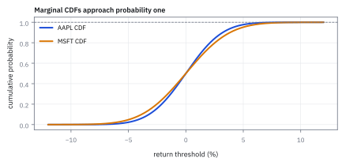

6.2 Linear Independence and Linear Combinations
สินทรัพย์ตัวใหม่เพิ่มทางเลือกจริงก็ต่อเมื่อมันผสมจากของที่มีอยู่แล้วไม่ได้ และการตรวจเรื่องนี้ทำได้ด้วยการแก้สมการเชิงเส้นธรรมดา
กองทุน A ถือหุ้นกลุ่มธนาคาร พลังงาน เทคโนโลยี เป็นสัดส่วน 60/40/0 กองทุน B ถือ 20/0/80 วันนี้โบรกเกอร์เสนอกองทุน C ที่ถือ 40/20/40 พร้อมบอกว่า “เพิ่มทางเลือกให้พอร์ต” (กองทุนสมมติ) ถ้าเราซื้อ A และ B ได้อยู่แล้ว C ให้สัดส่วนสามกลุ่มแบบที่เราทำเองไม่ได้จริงไหม แล้วกองทุน D ที่ถือ 45/15/40 ล่ะ
ลองตอบก่อนเปิดเฉลย
C ไม่เพิ่มอะไร: ใส่เงินครึ่งหนึ่งใน A และอีกครึ่งใน B ได้ $0.5(60,40,0)+0.5(20,0,80)=(40,20,40)$ เท่ากับ C พอดี ส่วน D เพิ่มจริง เพราะการผสม A กับ B ที่ให้พลังงาน 15 และเทคโนโลยี 40 ได้ธนาคารแค่ 32.5 ไม่ใช่ 45 แต่ “ไม่เพิ่มทิศทาง” ไม่ได้แปลว่าไร้ประโยชน์ ถ้าค่าธรรมเนียมของ C ต่ำกว่าการถือ A คู่กับ B, C ก็เป็นทางที่ถูกกว่าในการซื้อสัดส่วนเดิม
ภาพรวมก่อนลงสูตร
เมื่อพอร์ตเป็น vector การผสมพอร์ตก็คือการคูณแต่ละ vector ด้วยตัวเลขหนึ่งตัวแล้วบวกกัน เรียกว่า linear combination ทุกอย่างที่ผสมได้รวมกันเรียกว่า span ถ้ามี vector ตัวไหนผสมได้จากตัวอื่นอยู่แล้ว มันไม่ได้เพิ่มทิศทางใหม่ และชุดนั้นเรียกว่า linearly dependent ถ้าไม่มีตัวไหนซ้ำเลย ชุดนั้นเรียกว่า linearly independent
คำถามนี้โผล่ทุกที่บนโต๊ะ: กองทุนใหม่เพิ่ม exposure ใหม่ไหม option สร้างจากหุ้นกับ bond ได้ไหม (ถ้าได้ ราคาของมันถูกบังคับไปด้วย) และทำไมทฤษฎีพอร์ตจึงบอกว่านักลงทุนต้องการกองทุนแค่สองกอง รูปด้านล่างสรุปสามกรณีในระนาบที่ต้องแยกให้ออก
หน้านี้จะหาสัมประสิทธิ์ของการผสมแล้วตรวจทุกช่อง นิยาม independence ให้ตรวจได้ด้วยสมการ วัดขนาดของ span ด้วย rank ใช้คอลัมน์ payoff สร้าง call option และดูว่าข้อจำกัดอย่างการห้าม short ตัด span ให้เหลือแค่ส่วนเล็ก ๆ
รูป — ไม่ขนาน ขนาน และวนกลับศูนย์
ศัพท์ที่ใช้ในหัวข้อนี้
- Linear combination
- ผลรวมของ vector ที่แต่ละตัวคูณด้วยตัวเลข (สัมประสิทธิ์) เช่น $a\mathbf A+b\mathbf B$ ใช้บรรยายการแบ่งเงินลงหลายกองทุนหรือการถือหลายสินทรัพย์พร้อมกัน
- Span
- ทุกอย่างที่ได้จาก linear combination ทุกแบบ โดยให้สัมประสิทธิ์เป็นจำนวนจริงอะไรก็ได้ ใช้ตอบว่าจากเครื่องมือที่มี เราสร้างพอร์ตหรือ payoff แบบไหนได้บ้าง
- Linear independence และ dependence
- ชุด vector เป็น independent ถ้าทางเดียวที่ผสมแล้วได้ศูนย์คือให้สัมประสิทธิ์ทุกตัวเป็นศูนย์ ถ้ามีทางอื่น ชุดนั้น dependent คือมีตัวที่ซ้ำ ใช้ตรวจว่าเครื่องมือใหม่เพิ่มทิศทางจริงไหม
- Rank
- จำนวนทิศทางที่ไม่ซ้ำกันในชุด vector หรือในคอลัมน์ของ matrix ใช้วัดขนาดของ span เป็นจำนวนมิติ ไม่ใช่จำนวนชื่อสินทรัพย์
- Range
- ทุกผลลัพธ์ $M\mathbf x$ ที่ matrix $M$ สร้างได้ ซึ่งก็คือ span ของคอลัมน์ของ $M$
- Replication และ complete market
- Replication คือสร้างพอร์ตที่จ่ายเท่ากับตราสารเป้าหมายในทุกสถานการณ์ ตลาดที่ทำได้กับทุก payoff เรียกว่า complete market ใช้กำหนดราคา option จากราคาหุ้นกับ bond
- Two-fund theorem
- ผลจากทฤษฎีพอร์ตที่ว่าพอร์ต efficient ทุกพอร์ตเป็น linear combination ของพอร์ต efficient สองพอร์ต ใช้อธิบายว่าทำไมนักลงทุนต้องการกองทุนแค่สองกอง
ขั้นที่ 1 — ผสมพอร์ต: คูณทั้ง vector แล้วบวกทีละช่อง
ก่อนถามว่าอะไรซ้ำ ต้องเขียนการผสมให้เป็นตัวเลขก่อน ลำดับช่องคือ ธนาคาร พลังงาน เทคโนโลยี และแต่ละช่องเป็นน้ำหนักต่อ NAV ของกองทุน
สัมประสิทธิ์ $a$ กับ $b$ คือสัดส่วนเงินที่ใส่ในแต่ละกองทุน ทำไมผลคูณช่องต่อช่องจึงเป็น exposure ของพอร์ตผสมจริง: ทุก 1 ดอลลาร์ใน A มีหุ้นธนาคาร 0.6 ดอลลาร์ ใส่เงิน 0.5 ดอลลาร์ใน A จึงได้หุ้นธนาคาร 0.3 ดอลลาร์ บวกกับ 0.1 ดอลลาร์ที่มาจาก B รวมเป็น 0.4 นี่คือ dot product จาก row vectors และ column vectors ทำทีละกลุ่มอุตสาหกรรม
ขั้นที่ 2 — หาสัมประสิทธิ์จากช่องที่ง่าย แล้วใช้ช่องที่เหลือตรวจ
ถ้ากองทุนเป้าหมายสร้างจาก A กับ B ได้ ต้องมี $a,b$ คู่เดียวที่ทำให้ ทุก ช่องตรง จะเลือก $a,b$ ใหม่ในแต่ละช่องไม่ได้ ช่องพลังงานมีแค่ $a$ และช่องเทคโนโลยีมีแค่ $b$ จึงใช้หาค่าได้ทันที ส่วนช่องธนาคารเหลือไว้ตรวจ
สำหรับ C ช่องธนาคารที่ผสมได้คือ 0.4 ตรงกับ C จึงยืนยันว่า $\mathbf C=0.5\mathbf A+0.5\mathbf B$ ทุกช่อง สำหรับ D สองช่องแรกบังคับ $a=0.375,b=0.5$ จนไม่เหลืออิสระ แล้วช่องธนาคารออกมา 0.325 แต่ D ต้องการ 0.45 ขาดไป 0.125 จึงไม่มี $a,b$ คู่ไหนสร้าง D ได้ ถ้าลืมตรวจช่องสุดท้าย เราจะสรุปผิดว่า D ก็ซ้ำ
ซื้อ A, B, C อย่างละหนึ่งในสามก็ยังเป็นพอร์ตเดิม: $\tfrac13\mathbf A+\tfrac13\mathbf B+\tfrac13(\tfrac12\mathbf A+\tfrac12\mathbf B)=\tfrac12\mathbf A+\tfrac12\mathbf B=\mathbf C$ มีสามชื่อในพอร์ต แต่มีแค่สองทิศทาง
รูป — สามเหลี่ยมของพอร์ตที่น้ำหนักรวมเป็นหนึ่ง
ขั้นที่ 3 — นิยาม independence: ผสมได้ศูนย์ทางเดียวคือไม่ใส่อะไรเลย
การไล่ถามว่า “ตัวนี้สร้างจากตัวอื่นได้ไหม” ทีละตัวยุ่งเมื่อมีหลายตัว นิยามที่ใช้จริงจึงถามคำถามเดียวที่ครอบคลุมทุกตัว: มีวิธีผสมที่ไม่ใช่ศูนย์ล้วนแล้วได้ vector ศูนย์ไหม
บรรทัดแรกคือนิยาม: ชุดเป็น linearly independent เมื่อสมการผสมได้ศูนย์มีคำตอบเดียวคือศูนย์ทุกตัว บรรทัดที่สองบอกว่าทำไมนิยามนี้จับ “ตัวซ้ำ” ได้: ถ้ามีคำตอบที่ $a_j$ ไม่เป็นศูนย์ ย้ายพจน์ที่ $j$ ไปอีกข้างแล้วหารด้วย $a_j$ ได้ (หารได้เพราะ $a_j\ne0$) $\mathbf v_j$ จึงเป็น linear combination ของตัวอื่น กลับกัน ถ้า $\mathbf v_j=\sum c_i\mathbf v_i$ อยู่แล้ว ให้ $a_j=-1$ กับ $a_i=c_i$ ก็ผสมได้ศูนย์ สองคำถามจึงเป็นคำถามเดียวกัน
บรรทัดสุดท้ายคือหลักฐานว่าชุด A, B, C เป็น dependent แม้ไม่มีคู่ไหนขนานกันเลย ส่วน A กับ B สองตัวเป็น independent: ถ้า $a\mathbf A+b\mathbf B=\mathbf 0$ ช่องพลังงานบังคับ $0.4a=0$ และช่องเทคโนโลยีบังคับ $0.8b=0$ จึงได้ $a=b=0$ เท่านั้น
สองกรณีที่คนมักพลาด: ชุดที่มี vector ศูนย์อยู่ด้วยเป็น dependent เสมอ เพราะคูณ vector ศูนย์ด้วย 1 แล้วคูณตัวอื่นด้วย 0 ก็ได้ศูนย์ และการตรวจทีละคู่ไม่พอ $(1,0),(0,1),(1,1)$ ไม่มีคู่ไหนขนาน แต่ทั้งชุดวนกลับศูนย์ได้ตามแผงขวาของรูปสามแผงด้านบน
ขั้นที่ 4 — span มีขนาดเท่าไร: rank นับทิศทางที่ไม่ซ้ำ
เมื่อรู้ว่า A กับ B เป็นสองทิศทางที่ไม่ซ้ำ คำถามถัดไปคือสองทิศทางนี้ไปถึงไหนได้บ้าง เขียน vector ใดก็ได้ใน span เป็น $(x,y,z)$ แล้วกำจัด $a,b$ ทิ้ง
ทุก vector ที่ผสมจาก A กับ B ต้องมีช่องธนาคารเท่ากับ $1.5\times$ พลังงาน $+\,0.25\times$ เทคโนโลยี นี่คือสมการของระนาบที่ผ่านจุดกำเนิดในสามมิติ ไม่ใช่ทั้งสามมิติ ตัวอย่าง: เทคโนโลยีล้วน $(0,0,1)$ ต้องการธนาคาร $1.5(0)+0.25(1)=0.25$ แต่มี 0 จึงสร้างไม่ได้ และเพิ่ม C เข้าไปก็ไม่ช่วย เพราะ C อยู่ในระนาบเดิม ชุด A, B, C จึงมี rank 2: สามชื่อ สองทิศทาง
matrix ที่ทุกคอลัมน์ชี้ทางเดียวกันคือกรณีที่ span เล็กที่สุดนอกจากศูนย์
ทั้งสามคอลัมน์เป็นผลคูณของ $(1,2)$ ไม่ว่าจะเลือก $\mathbf x$ อย่างไร $M\mathbf x$ ก็อยู่บนเส้นตรงผ่าน $(1,2)$ เท่านั้น (แผงกลางของรูปสามแผงด้านบน) range ของ $M$ คือเส้นนั้น และ rank เท่ากับ 1 นับจากแถวก็ได้เท่ากัน: แถวที่สองคือสองเท่าของแถวแรก จำนวนแถวที่ไม่ซ้ำเท่ากับจำนวนคอลัมน์ที่ไม่ซ้ำเสมอ และไม่เกินจำนวนแถวหรือคอลัมน์ที่น้อยกว่า ซึ่งพิสูจน์ใน rank, range และ invertibility
ขั้นที่ 5 — สามทิศทางที่เติมเต็มสามมิติ
สามชื่อใน A, B, C ให้แค่สองทิศทาง ลองดูชุดสามตัวที่ไม่ซ้ำเลย ให้ $\mathbf u=(1,0,1)$, $\mathbf v=(0,1,1)$, $\mathbf w=(1,1,0)$ แล้วตรวจตามนิยาม
สองสมการแรกเขียน $a$ กับ $b$ เป็น $-c$ แทนลงสมการที่สามได้ $-2c=0$ ทางเดียวที่ผสมได้ศูนย์จึงเป็นศูนย์ทุกตัว ชุดนี้ independent มีสามทิศทางในสามมิติ จึง span ได้ทั้งสามมิติ: ไม่ว่าเป้าหมายเป็นอะไร มีสัมประสิทธิ์ชุดเดียวที่ไปถึง
ตรวจซ้ำด้วย determinant
สำหรับ matrix จัตุรัส คอลัมน์เป็น independent ก็ต่อเมื่อ determinant ไม่เป็นศูนย์ (เหตุผลอยู่ใน rank, range และ invertibility) ใช้เป็นการตรวจซ้ำของสิ่งที่พิสูจน์ด้วยสมการแล้ว โดยกระจายตามแถวแรก
A, B, C ได้ศูนย์ (มีตัวซ้ำ) A, B, D ได้ 0.04 (D เพิ่มทิศทางใหม่ ตรงกับที่เราหา $a,b$ ให้ D ไม่ได้) สำหรับข้อมูลจริง ค่า determinant เล็กไม่ได้แปลว่าซ้ำเสมอไป เพราะมันเปลี่ยนตามหน่วย งานเชิงตัวเลขจึงตรวจด้วยวิธีที่ทนต่อการเปลี่ยนหน่วยกว่า
รูป — สามทิศทางที่ไม่ซ้ำในสามมิติ

ขั้นที่ 6 — สร้าง call option จากคอลัมน์ payoff ของหุ้นกับ bond
ตอนตั้งปัญหา hedge เราเขียน payoff ของพอร์ตเป็น $S\boldsymbol\theta$ ซึ่งเป็น linear combination ของคอลัมน์สินทรัพย์ คำถามว่าภาระที่ต้องจ่ายสร้างได้ไหม จึงเป็นคำถามว่ามันอยู่ใน range ของ $S$ ไหม
โจทย์ให้อะไรมาบ้าง: ตลาดสองสถานการณ์ หุ้นวันนี้ \$100 ปีหน้าเป็น \$120 หรือ \$80 bond วันนี้ \$100 จ่าย \$105 ทั้งสองกรณี call option strike 100 จ่าย $\max(S_1-100,0)$ คือ \$20 หรือ \$0 หาจำนวนหุ้น $a$ และ bond $b$ ที่จ่ายเท่า call ทุกกรณี
คำตอบ: ซื้อหุ้นครึ่งหน่วย และ short bond $8/21\approx0.381$ หน่วย (คือกู้เงิน \$38.10) พอร์ตนี้ต้นทุน \$11.90 ตรวจกลับ: ราคาขึ้นจ่าย $60-40=20$ ราคาลงจ่าย $40-40=0$ ตรงกับ call ทั้งสองกรณี ลบสมการที่สองออกจากสมการแรกทำให้ $b$ หายไป เพราะ bond จ่ายเท่ากันทั้งสองกรณี เหลือแค่ส่วนต่างของหุ้น 40 ที่ต้องสร้างส่วนต่างของ call 20
ถ้ามีคนขาย call ที่ \$13 เราขาย call นั้นแล้วสร้างพอร์ตจำลองด้วยเงิน \$11.90 ได้เงินทันที \$1.10 และปีหน้าเงินที่ต้องจ่ายกับเงินที่ได้หักกันพอดีทั้งสองกรณี ราคาที่ไม่มีช่องให้ทำแบบนี้ (no-arbitrage) จึงต้องเป็น \$11.90 ภายใต้แบบจำลองนี้ ซึ่งคือจุดตั้งต้นของ binomial tree pricing
ตรวจเองใน 10 วินาที: คอลัมน์หุ้น $(120,80)$ กับคอลัมน์ bond $(105,105)$ ขนานกันไหม $120(105)-80(105)=4{,}200\ne0$ จึงไม่ขนาน สองคอลัมน์ไม่ซ้ำในสองมิติ span ได้ทั้งระนาบ payoff ใด ๆ ในตลาดสองสถานการณ์นี้จึงสร้างได้ ตลาดนี้เป็น complete market
รูป — call option คือครึ่งลูกศรหุ้นลบด้วยลูกศร bond
ขั้นที่ 7 — กองทุนสองกองพอ: two-fund theorem และข้อจำกัดที่ตัด span
ทฤษฎีพอร์ตแบบ mean-variance มีผลที่ใช้ linear combination ตรง ๆ: ถ้า $\mathbf x^{(1)}$ กับ $\mathbf x^{(2)}$ เป็นพอร์ต efficient สองพอร์ตที่ผลตอบแทนคาดหวัง $r_1\ne r_2$ พอร์ต efficient ที่ผลตอบแทนคาดหวัง $r$ ใด ๆ คือส่วนผสมของสองพอร์ตนี้ ขั้นนี้ดูส่วนที่เป็นพีชคณิตเชิงเส้นของผลนั้น
ผลรวมน้ำหนัก $\mathbf 1^{\mathsf T}\mathbf y$ และผลตอบแทนคาดหวัง $\boldsymbol\mu^{\mathsf T}\mathbf y$ เป็น dot product ซึ่งเป็นเชิงเส้น ส่วนผสมจึงยังใช้เงินครบ และผลตอบแทนคาดหวังเป็นส่วนผสมแบบเดียวกันของ $r_1,r_2$ ตั้งให้เท่ากับเป้า $r$ แล้วแก้ได้ $\beta$ ในบรรทัดสุดท้าย ส่วนที่ว่าส่วนผสมนี้ “efficient” ด้วย มาจากเงื่อนไขของคำตอบที่ดีที่สุดซึ่งเป็นเชิงเส้นเช่นกัน (Markowitz portfolio selection) ผลคือตลาดต้องการกองทุนแค่สองกองก็สร้างพอร์ต efficient ได้ทุกพอร์ต
ตัวอย่าง: สมมติ A กับ B เป็นสองพอร์ต efficient ที่ผลตอบแทนคาดหวัง 4% และ 8% เป้า 6% ได้ $\beta=(6-4)/(8-4)=0.5$ คือ C แต่เป้า 10% ได้ $\beta=1.5$ คือ $-0.5\mathbf A+1.5\mathbf B=(0,-0.2,1.2)$ ซึ่งต้อง short กองทุน A (หรือ short หุ้นพลังงาน 20% ของ NAV) และถือเทคโนโลยี 120% คือจุด E นอกสามเหลี่ยมในรูปสามเหลี่ยมด้านบน
| ข้อกำหนดของสัมประสิทธิ์ | สิ่งที่ผสมได้จาก A และ B |
|---|---|
| $a,b$ เป็นจำนวนจริงอะไรก็ได้ | ทั้งระนาบ $x=1.5y+0.25z$ (span) อาจต้อง short หรือกู้ |
| $a+b=1$ | เส้นตรงผ่าน A และ B (เส้นเขียวรวมเส้นประในรูปสามเหลี่ยม) |
| $a+b=1$ และ $a,b\ge0$ | แค่ส่วนเขียวระหว่าง A กับ B: แบ่งเงินโดยไม่ short |
| มีเพดานสถานะ ค่าธรรมเนียม ภาษี | เล็กลงอีก แม้เป้าหมายอยู่ใน span ก็อาจทำจริงไม่ได้ |
รูป — เลื่อน β ไปตามเส้นของสองกองทุน
ความผิดที่ทำให้สรุปผิดว่า “สร้างได้” หรือ “ปลอดภัย”
เกือบซ้ำแต่ไม่ซ้ำ: $\mathbf u=(1,0)$ กับ $\mathbf v=(1,0.2)$ เป็น independent แต่จะสร้าง $(0,1)$ ต้องแก้ $a+b=0$ และ $0.2b=1$ ได้ $b=5,a=-5$ คือต้องถือสองขาขนาด 5 เท่าเพื่อได้ของขนาด 1 ถ้าช่องที่สองของ $\mathbf v$ เล็กลงเป็น 0.001 สัมประสิทธิ์กลายเป็น $\pm1{,}000$ ยิ่งกว่านั้น ถ้า $\mathbf u$ จริง ๆ มีช่องที่สองเป็น 0.02 (กรณี 0.2) หรือ 0.0001 (กรณี 0.001) แทนที่จะเป็นศูนย์ ผลที่ได้จะเป็น $-5(0.02)+5(0.2)=0.9$ หรือ $-1{,}000(0.0001)+1{,}000(0.001)=0.9$ แทน 1 ความคลาดเคลื่อนเล็ก ๆ ในข้อมูลถูกขยายเป็นความผิด 10% ของเป้าหมาย
ข้อมูลระดับกลุ่มเท่ากัน ไม่ใช่ payoff เท่ากัน: C กับ ครึ่ง A ครึ่ง B มีน้ำหนักสามกลุ่มเท่ากัน แต่หุ้นรายตัวข้างในอาจต่างกัน ผลตอบแทนจริงจึงต่างกันได้ การ long C แล้ว short ส่วนผสม A/B เพื่อเก็บส่วนต่างค่าธรรมเนียมไม่ใช่ arbitrage
independence สองความหมาย: linear independence เป็นเรื่องของ vector ที่รู้ค่าแน่นอน ว่าตัวหนึ่งผสมจากตัวอื่นได้ไหม ส่วน independence ของตัวแปรสุ่ม เป็นเรื่องว่ารู้ค่าตัวหนึ่งแล้ว การแจกแจงของอีกตัวเปลี่ยนไหม สองกองทุนที่ exposure ไม่ซ้ำกันเลยอาจมีผลตอบแทนที่เคลื่อนไหวไปด้วยกันมากก็ได้ ซึ่งวัดด้วย correlation
ตรวจไม่ครบทุกช่องหรือทุกสถานการณ์: พอร์ตที่จำลอง call ในสองสถานการณ์ ถ้ามีสถานการณ์ที่สามที่หุ้นจบที่ \$100 จะจ่าย $0.5(100)-40=10$ ดอลลาร์ แต่ call จ่ายศูนย์ สองคอลัมน์สร้างได้แค่ระนาบในพื้นที่สามมิติของสามสถานการณ์
รูป — ทิศที่เกือบขนานต้องใช้สถานะใหญ่หักล้างกัน
ใช้ทำอะไรบนโต๊ะจริง
ค่าธรรมเนียมเป็นเหตุผลที่ดีที่จะซื้อของซ้ำ: ถ้า expense ratio ของ A, B, C เป็น 0.30%, 0.60% และ 0.25% ต่อปี บน NAV \$10 ล้าน ครึ่ง A ครึ่ง B เสีย $10{,}000{,}000\times(0.5\times0.30\%+0.5\times0.60\%)=\$45{,}000$ ต่อปี ส่วน C เสีย \$25,000 ประหยัด \$20,000 สำหรับ exposure สามกลุ่มเดิม (ยังไม่นับภาษี ค่าซื้อขาย และความต่างของหุ้นข้างใน) ในงาน factor model คำถามเดียวกันคือ “factor ใหม่อยู่ใน span ของ factor เดิมหรือเปล่า” ถ้าอยู่ มันไม่ได้อธิบายอะไรเพิ่ม (alpha spanned และ orthogonal)
โจทย์ตรวจความเข้าใจ
1. ถ้าซื้อกองธนาคารล้วน $\mathbf H=(1,0,0)$ ได้ด้วย จะสร้างเทคโนโลยีล้วน $(0,0,1)$ จาก B กับ H อย่างไร
เฉลย
ช่องเทคโนโลยีบังคับ $0.8b=1$ ได้ $b=1.25$ ซึ่งพาธนาคารมา $0.2(1.25)=0.25$ จึงต้อง short H 0.25: $1.25\mathbf B-0.25\mathbf H=(0.25-0.25,\,0,\,1)=(0,0,1)$ ตรวจช่องพลังงาน: ทั้งสองกองมีศูนย์ ตรง ใช้ได้ในระดับกลุ่ม แต่ต้อง short ได้จริง
2. ในตลาดสองสถานการณ์เดิม (หุ้น 120 หรือ 80, bond 105) จงสร้าง put option strike 100 ซึ่งจ่าย \$0 หรือ \$20 และหาราคา
เฉลย
$120a+105b=0$ และ $80a+105b=20$ ลบกันได้ $40a=-20$ คือ $a=-0.5$ แล้ว $105b=60$ ได้ $b=4/7\approx0.571$ ราคา $=-0.5(100)+\tfrac47(100)=\tfrac{50}{7}\approx7.14$ ดอลลาร์ ตรวจ: call − put $=11.90-7.14=4.76=100-100/1.05$ ซึ่งคือราคาหุ้นลบมูลค่าปัจจุบันของ strike ตรงกับ put–call parity
3. สามกองทุนมีน้ำหนักสามกลุ่ม $(0.5,0.5,0)$, $(0,0.5,0.5)$ และ $(0.5,0,0.5)$ ชุดนี้ independent ไหม
เฉลย
ให้ $a(0.5,0.5,0)+b(0,0.5,0.5)+c(0.5,0,0.5)=\mathbf 0$ ได้ $0.5a+0.5c=0$, $0.5a+0.5b=0$, $0.5b+0.5c=0$ คือ $c=-a$, $b=-a$ แล้ว $-a-a=0$ ได้ $a=0$ ทุกตัวจึงเป็นศูนย์ independent (เป็นครึ่งหนึ่งของ $\mathbf w,\mathbf v,\mathbf u$ ชุดสามทิศทางที่เติมเต็มสามมิติด้านบนพอดี) สามกองนี้ผสมได้ทุกสัดส่วนของสามกลุ่ม ถ้า short ได้
คำนวณซ้ำด้วย JavaScript
โค้ดแก้สัมประสิทธิ์จากช่องที่ง่ายแล้วคำนวณ residual ทุกช่อง เพราะการหาสัมประสิทธิ์ได้ไม่ได้พิสูจน์ว่าสร้างได้ จนกว่าจะตรวจช่องที่ไม่ได้ใช้
เปิดดูโค้ด
const A = [0.6, 0.4, 0], B = [0.2, 0, 0.8], C = [0.4, 0.2, 0.4], D = [0.45, 0.15, 0.40];
const mix = (a, b) => A.map((x, i) => a * x + b * B[i]);
function fitAB(target) {
const a = target[1] / A[1], b = target[2] / B[2]; // energy row, tech row
const residual = target.map((x, i) => x - mix(a, b)[i]);
return {a, b, residual, fits: Math.max(...residual.map(Math.abs)) < 1e-12};
}
const det3 = (a, b, c) => a[0] * (b[1] * c[2] - b[2] * c[1])
- b[0] * (a[1] * c[2] - a[2] * c[1]) + c[0] * (a[1] * b[2] - a[2] * b[1]);
// replication in a two-state market
const a = (20 - 0) / (120 - 80), b = -80 * a / 105;
const putA = (0 - 20) / (120 - 80), putB = (0 - 120 * putA) / 105;
console.log({
C: fitAB(C), D: fitAB(D), pureTech: fitAB([0, 0, 1]),
detABC: det3(A, B, C), detABD: det3(A, B, D),
detUVW: det3([1, 0, 1], [0, 1, 1], [1, 1, 0]),
call: {a, b, price: 100 * a + 100 * b, up: 120 * a + 105 * b, down: 80 * a + 105 * b},
put: {a: putA, b: putB, price: 100 * putA + 100 * putB},
twoFund: [0.5, 1.5].map(beta => A.map((x, i) => (1 - beta) * x + beta * B[i])),
nearDependent: [0.2, 0.001].map(e => [-1 / e, 1 / e])
});สิ่งที่ควรตอบได้หลังอ่าน
- หาสัมประสิทธิ์จากช่องที่แก้ง่าย แล้วตรวจช่องที่เหลือทุกช่อง: C $=0.5\mathbf A+0.5\mathbf B$ ผ่าน แต่ D ขาดธนาคาร 0.125
- ชุดเป็น independent เมื่อทางเดียวที่ผสมได้ศูนย์คือศูนย์ทุกตัว ถ้ามีทางอื่น ตัวหนึ่งเขียนด้วยตัวอื่นได้ และการตรวจทีละคู่ไม่พอ
- rank นับทิศทางที่ไม่ซ้ำ: A, B, C มี rank 2 และ matrix ที่คอลัมน์เป็นผลคูณของ $(1,2)$ มี rank 1
- payoff ที่อยู่ใน range ของตาราง payoff สร้างได้ และราคาของมันถูกบังคับด้วย no-arbitrage: call ในตัวอย่างราคา \$11.90
- span ยอมให้สัมประสิทธิ์ติดลบ ข้อจำกัดอย่างห้าม short ตัดเหลือแค่ส่วนเขียว และทิศที่เกือบขนานต้องใช้สถานะใหญ่ที่ไวต่อความผิดพลาด
หน้าถัดไป basis เลือกชุดที่ independent และ span ครบพอดี แล้วใช้มันเป็นแกนใหม่ในการบรรยายพอร์ตเดิม โดยเงินไม่หายสักดอลลาร์